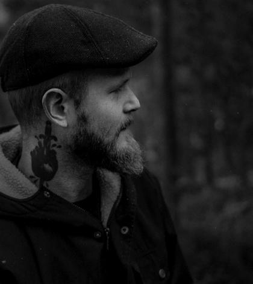

Daniel Hessling
Frontend-Developer
daniel.hessling@gmail.com


My name is Daniel Hessling and I am currently studying Front-End Development at Nackademin in Stockholm, Sweden.
The purpose of this website is to show who I am, projects I have done by myself or being a part of, at Nackademin.
daniel.hessling@gmail.com